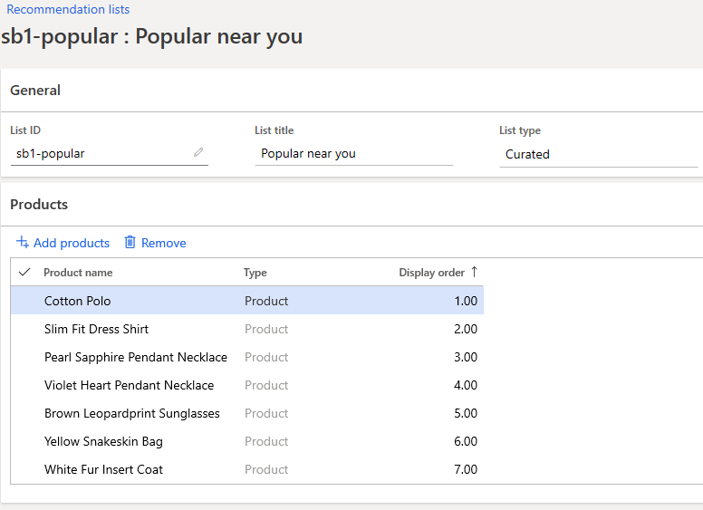

Manuelle Erstellung kuratierter Empfehlungen
Important
Dynamics 365 Retail ist jetzt Dynamics 365 Commerce und bietet umfassende Handelsfunktionen für alle Kanäle – von E-Commerce über Shops bis hin zu Callcentern. Weitere Informationen zu diesen Änderungen finden Sie unter Microsoft Dynamics 365 Commerce.
In diesem Thema wird erläutert, wie Händler manuell Produktempfehlungslisten für Microsoft Dynamics 365 Commerce-Kunden erstellen und verwalten können.
Kuratierte Listen sind Sammlungen von individuellen Inhalten, die von Personen erstellt und kuratiert wurden.
Neue Liste erstellen
Um eine kuratierte Produktempfehlungsliste zu erstellen, folgen Sie diesen Schritten.
- Gehen Sie zu Retail und Commerce > Produktempfehlungen > Empfehlungslisten.
- Wählen Sie Neu aus.
- Geben Sie im Feld Listen-ID einen Wert ein.
- Geben Sie im Feld Listennamen einen Wert ein.
- Der Listenname Ist der Titel der Liste, der in der kuratierten Listenauswahl des Moduls Produktsammlung angezeigt wird.
- Um Produkte der Liste hinzuzufügen, wählen Sie Produkte hinzufügen.
- Um die Reihenfolge der Produkte in der Liste zu ändern, geben Sie einen Wert in der Spalte Anzeigereihenfolge ein.
- Wenn zwei Produkte den gleichen Wert aufweisen, dann kann der abschließende Auftrag dieser zwei Ergebnisse sich vom Back Office unterscheiden.
- Wählen Sie Speichern, um die Liste zu speichern.
Beispielliste

Zusätzliche Ressourcen
Überblick über Produktempfehlungen
Aktivieren von Azure Data Lake Storage in einer Dynamics 365 Commerce Umgebung
Produktempfehlungen aktivieren
Personalisierte Empfehlungen aktivieren
Personalisierte Empfehlungen kündigen
Die Empfehlungen „Produkte mit ähnlichem Aussehen kaufen“ aktivieren
Produktempfehlungen in POS hinzufügen
Empfehlungen dem Transaktionsbildschirm hinzufügen
Anpassung der Ergebnisse der AI-ML-Empfehlungen